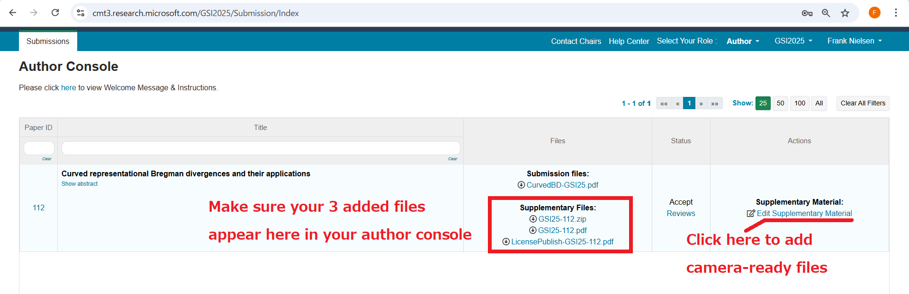

Camera ready instructions for GSI'25 accepted proceedings paper
Please kindly prepare your final camera-ready paper by taking into account
all the reviews available on
CMT using
the ***Springer LNCS file format*** (LaTeX style file)
10 pages***:
That is, you may optionally use two extra pages since the 8-page submission.
However, do not add new results but rather use potentially these two extra pages to refine your explanations or enhance the style of your paper like for example using more centered math equations \[\] instead of inline equations $...$, addressing reviewers' comments, etc.
Please submit your final camera ready paper on CMT
***July 14th 2025*** (AOE, anywhere on earth) as follows:
INSTRUCTIONS
- A: Create a directory name "GSI25-"+ your paper ID (eg., GSI25-008 for GSI'25 paper ID 8) and include all latex files (including macros, etc) and also a compiled pdf file.
The main file name of your LaTeX or Word shall be "GSI25-"+ your paper number using 3 digits:
For example, paper numbers 8, 15, 110 shall be named GSI25-008.tex, GSI25-015.tex, GSI25-110.tex, respectively, and put in a folder named GSI25-008, GSI25-015, GSI25-110, respectively.
It is better to have single source file GSI-PaperID.tex (example: GSI25-008.tex for paper ID 8) and also add the Springer LNCS style file in thst directory so that we can directly compile your paper locally and check the result with your compilation.
- B/ Please ***fill in and sign*** the
Springer Nature Licence to Publish which can be found at
http://franknielsen.github.io/GSI/GSI25-LicensePublish.docx
http://franknielsen.github.io/GSI/GSI25-LicensePublish.pdf
Please be sure to sign ALL pages of the copyright form which should named LicensePublish-GSI25-PaperID.docx
Scan a PDF of the SIGNED copyright form in filename
LicensePublish-GSI25-#PaperID.pdf (ex. for paper id 8, LicensePublish-GSI25-008.pdf)
- C/ On CMT (https://cmt3.research.microsoft.com/GSI2025/), upload the following three files in the supplementary files section:
- GSI25-PaperID.pdf
- GSI25-PaperID.zip
- GSI25-LicensePublish-PaperID.pdf
For example GSI25-008.pdf, GSI25-008.zip, GSI25-LicensePublish-008.pdf for paper number 8.

Beware that papers longer than 10 pages or not following the LNCS file format or paper missing the SIGNED license to publish will not be accepted in the final Springer LNCS proceedings.
We also need one Author of the accepted paper registered to the conference by 15th September 2025.
We are looking forward to meeting with you at GSI'25!
Best regards,
Frederic BARBARESCO and Frank NIELSEN, on behalf of the GSI'25 PC.